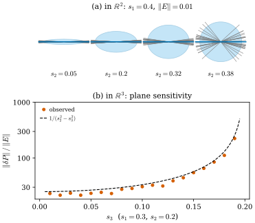
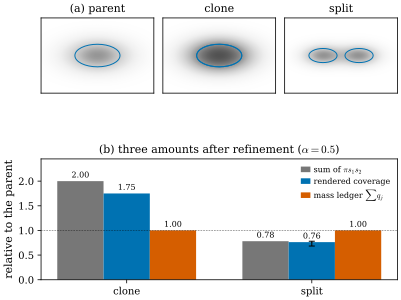

46.8 Gaussian Splatting as Geometry
Goals
- 3DGS Gaussian의 covariance에서 plane \(P = I - r_3r_3^{\mathsf T}\)를 읽고, 그 plane이 covariance의 작은 변화에 \(1/(s_2^2 - s_3^2)\)배로 흔들린다는 것을 증명할 수 있다.
- opacity가 넓이(mass)가 아닌 이유를 alpha compositing으로 설명하고, clone과 split이 넓이의 합, 렌더링 coverage, mass 장부를 각각 어떻게 바꾸는지 계산할 수 있다.
- Gaussian 집합을 point cloud varifold \(V_{\mathcal{G}} = \sum_iq_i\,\delta_{\mu_i} \otimes \delta_{P_i}\)로 읽고, refinement가 mass와 moment를 보존할 조건과 그때 varifold가 변하는 양의 bound를 증명할 수 있다.
- surface를 Gaussian으로 덮었을 때 (46.7.6)의 bound가 얼마인지 sphere에서 계산하고 그 의미를 말할 수 있다.
Prerequisites
- Section 46.3: plane을 projection matrix로 보는 것((46.3.1)), plane 사이의 거리(Proposition 46.3.4). Section 46.4: point cloud varifold(Definition 46.4.6). Section 46.7: bounded Lipschitz distance와 cell bound(Definition 46.7.6, Proposition 46.7.9).
- Part IV: 가장 짧은 축이 normal이라는 것(Section 29.1), covariance의 parametrization(Section 29.2), split과 clone(Section 29.4), 2D Gaussian과 blending weight(Section 30.3)
Motivation
앞 절에서 surface와 point cloud varifold가 얼마나 가까운지를 셀(cell)마다의 위치, plane, mass 오차로 재었다. Section 46.4는 [ManifoldGS26]의 Gaussian varifold가 point cloud varifold라고 했다. 이 절은 그 대응을 구체적으로 만든다. Gaussian 하나 \((\mu, \Sigma, \alpha, c)\)(중심, covariance, opacity, 색)에서 varifold의 원자 \((x, P, m)\)을 얻으려면 세 가지를 정해야 한다. 위치는 \(\mu\) 그대로다. plane은 covariance에서 읽는다. 문제는 mass이다. 가장 쉬운 선택은 opacity나 ellipse의 넓이인데, 이 절은 그 둘이 densification 아래에서 넓이처럼 행동하지 않는다는 것을 숫자로 보인다. 그래서 mass는 따로 장부를 두어 관리해야 한다. 그것이 [ManifoldGS26]의 설계다.
Reading a Plane from a Covariance
covariance를 회전 \(R = [r_1\ r_2\ r_3]\)과 scale \(s_1 \ge s_2 \ge s_3 \gt 0\)으로 쓰면(Section 29.2), 가장 긴 두 축이 펼치는 plane의 projection은
이다 [ManifoldGS26, (1)–(3)]. \(P\)는 \(\Sigma\)의 큰 eigenvalue 두 개의 eigenspace로의 projection이므로 \(s_2 \gt s_3\)이기만 하면 잘 정의된다. \(s_1 = s_2\)여서 \(r_1, r_2\)가 하나로 정해지지 않아도 \(P\)는 정해지고, \(r_3\)의 부호도 상관없다. 이것이 Section 29.1의 “가장 짧은 축이 normal”을 방향 없는 plane으로 다시 쓴 것이다. ManifoldGS26은 eigenvalue를 \(\lambda_{i1} \ge \lambda_{i2} \ge \lambda_{i3}\)(곧 \(s_k^2\))으로 쓰고 \(\lambda_{i1}, \lambda_{i2} \gg \lambda_{i3}\)인 “surface-like” Gaussian에만 이 읽기를 쓴다.
Example 46.8.1 (a Gaussian on the unit sphere). unit sphere의 북극 \(\mu = (0, 0, 1)\)에 \(s = (0.32, 0.20, 0.04)\), \(R = I\)인 Gaussian을 놓으면(Figure 29.1.3의 값), \(P = I - e_3e_3^{\mathsf T}\)가 sphere의 tangent plane과 정확히 같다. 이 Gaussian을 \(x\)축 둘레로 \(5^\circ\) 기울이면 \(\norm{P - P_{\text{true}}} = \sin5^\circ = 0.0872\)(Frobenius norm으로는 \(0.1233\))이다. (46.7.6)의 plane 오차 항에 들어가는 값이 이것이다.
Verification: verify/v-46-8-gaussian-splatting-geometry.py
학습된 Gaussian의 covariance는 정확하지 않다. 그 작은 오차가 plane을 얼마나 흔드는가? 답은 두 작은 scale의 간격에 달려 있다.
Proposition 46.8.2 (how stable the plane is). (46.8.1)에서 \(s_2 \gt s_3\)이고 \(E\)가 symmetric matrix이면, \(t \mapsto P(\Sigma + tE)\)는 \(t = 0\)에서 미분가능하고
이다(operator norm). 등호는 \(E = r_2r_3^{\mathsf T} + r_3r_2^{\mathsf T}\)에서 성립한다.
Proof. \(s_3^2\)은 단순 eigenvalue이므로 그 unit eigenvector \(r_3\)은 \(t\)에 대해 미분가능하고, 그 도함수는 Section 29.1의 What geometry explains 상자의 식 \(\dot r_3 = \sum_{j=1,2}\frac{r_j^{\mathsf T}Er_3}{s_3^2 - s_j^2}\,r_j\)이다. \(P = I - r_3r_3^{\mathsf T}\)이므로 \(\dot P = -(\dot r_3r_3^{\mathsf T} + r_3\dot r_3^{\mathsf T})\)이고, \(\dot r_3 \perp r_3\)이므로 이 matrix는 \(\dot r_3/\abs{\dot r_3}\)와 \(r_3\)이 펼치는 평면에서 \(-\begin{pmatrix}0 & \abs{\dot r_3} \\ \abs{\dot r_3} & 0\end{pmatrix}\)이다. 따라서 \(\norm{\dot P} = \abs{\dot r_3}\)이다. 분모 \(s_j^2 - s_3^2\)는 \(s_2^2 - s_3^2\) 이상이므로
\[ \begin{aligned} \abs{\dot r_3}^2 &= \sum_{j=1,2}\frac{(r_j^{\mathsf T}Er_3)^2}{(s_j^2 - s_3^2)^2} \\ &\le \frac{\abs{PEr_3}^2}{(s_2^2 - s_3^2)^2} \le \frac{\norm{E}^2}{(s_2^2 - s_3^2)^2} \end{aligned} \]
이다. \(E = r_2r_3^{\mathsf T} + r_3r_2^{\mathsf T}\)이면 \(r_2^{\mathsf T}Er_3 = 1 = \norm{E}\)이고 \(r_1^{\mathsf T}Er_3 = 0\)이라 등호다.
곧 plane은 “얼마나 납작한가”가 아니라 “두 작은 축이 얼마나 다른가”만큼 믿을 수 있다. \(s_3\)이 \(s_2\)에 가까워 바늘이나 ball에 가까운 Gaussian은 covariance가 조금만 변해도 plane이 크게 돈다. Figure 46.8.1(a)는 같은 일을 \(\R^2\)에서 본 것이다. \(\R^2\)에서는 긴 축 하나가 line을 정하고 간격은 \(s_1^2 - s_2^2\)이다. 크기 \(0.01\)의 무작위 symmetric perturbation 25개로 얻은 회색 line들이, \(s_2 = 0.05\)에서는 파란 원래 line에 붙어 있고 \(s_2 = 0.38\)(간격 \(0.0156\))에서는 사방으로 퍼진다. (b)는 \(\R^3\)에서 \(s = (0.3, 0.2, s_3)\)으로 두고 \(s_3\)을 키우며, 무작위 perturbation 300개 가운데 가장 큰 \(\norm{\delta P}/\norm{E}\)를 찍은 것이다. 점들이 점선 \(1/(s_2^2 - s_3^2)\) 바로 아래에(그 값의 \(81\)–\(96\%\)) 붙어 따라 올라간다. bound가 거의 날카롭다는 뜻이다.

Opacity Is Not Mass
3DGS는 ray를 따라 Gaussian을 앞에서부터 쌓는다. ray와 만나는 Gaussian의 opacity를 \(\alpha_i\hat G_i\)(\(\hat G_i \le 1\)은 footprint의 값)라 하면 \(i\)번째 Gaussian의 blending weight는 \(\alpha_i\hat G_i\prod_{j \lt i}(1 - \alpha_j\hat G_j)\)이고(Section 30.3), 그 ray가 가려지는 정도는 \(1 - \prod_i(1 - \alpha_i\hat G_i)\)이다. 이 식은 더하기가 아니라 곱하기다. 그래서 opacity는 measure처럼 더해지지 않는다.
Example 46.8.3 (two copies of one Gaussian). opacity \(\alpha\)인 Gaussian 두 개가 한 ray 위에서 겹치면 가려지는 정도는 \(1 - (1 - \alpha)^2 = 2\alpha - \alpha^2\)이다. \(\alpha = 0.5\)이면 \(0.75\)이고 \(1\)이 아니다. 납작한 Gaussian을 normal 방향에서 보면 footprint는 평면 위의 \(g(x) = \exp(-\tfrac12x^{\mathsf T}\Sigma^{-1}x)\)(\(\Sigma = \operatorname{diag}(s_1^2, s_2^2)\))이고, 평면 전체에서 가려지는 넓이는 \(\int\alpha g\,dx = 2\pi\alpha s_1s_2\)이다. 같은 자리에 같은 사본을 하나 더 두면(3DGS 공식 구현의 clone) 그 넓이는
\[ \begin{aligned} \int\big(1 - (1 - \alpha g)^2\big)\,dx &= 2\alpha\cdot2\pi s_1s_2 - \alpha^2\pi s_1s_2 \\ &= \big(2 - \tfrac\alpha2\big)\cdot2\pi\alpha s_1s_2 \end{aligned} \]
로, \(\alpha = 0.5\)이면 \(1.75\)배, \(\alpha = 0.9\)이면 \(1.55\)배다(\(\int g^2\,dx = \pi s_1s_2\)). 한편 Gaussian마다 \(1\sigma\) ellipse의 넓이 \(\pi s_1s_2\)를 mass로 주면 mass는 정확히 \(2\)배가 된다.
Verification: verify/v-46-8-gaussian-splatting-geometry.py
Example 46.8.4 (split). 3DGS의 split은 부모를 지우고, 부모의 distribution \(\mathcal{N}(\mu, \Sigma)\)에서 뽑은 두 위치에 covariance \(\Sigma/1.6^2\)이고 opacity는 부모와 같은 자식 둘을 둔다(Section 29.4). \(1\sigma\) ellipse 넓이의 합은 \(2/1.6^2 = 0.78\)배로 \(22\%\) 준다. 위와 같이 \(s_1 = 0.3\), \(s_2 = 0.15\), \(\alpha = 0.5\)로 두면 렌더링에서 가려지는 넓이는 자식이 \(\mu \pm 0.8s_1r_1\)에 놓일 때 부모의 \(0.762\)배이고, 무작위로 400번 뽑으면 \(0.684\)–\(0.781\)배(평균 \(0.754\))다. 자식이 겹칠수록 작아지고, 멀리 떨어진 극한이 \(0.78\)이다.
Verification: verify/v-46-8-gaussian-splatting-geometry.py
Figure 46.8.2가 두 예를 모은 것이다. (a)는 normal 방향에서 본 가려짐 \(1 - \prod(1 - \alpha g_i)\)의 회색 지도와 각 Gaussian의 \(1\sigma\) ellipse(파랑)다. clone은 같은 자리가 더 짙어질 뿐이고, split은 작은 두 조각이 된다. (b)는 세 가지 “양”을 부모에 대한 비로 비교한다. 회색 막대(ellipse 넓이의 합)는 clone에서 \(2\), split에서 \(0.78\)이고, 파란 막대(렌더링 coverage)는 \(1.75\)와 \(0.76\)이다(검은 막대는 무작위 split의 범위). 어느 것도 \(1\)이 아니다. 같은 surface 조각을 더 잘게 나누었을 뿐인데 그 조각의 넓이가 늘거나 준 셈이다. 주홍 막대는 아래의 mass 장부로, 정의상 \(1\)에 머문다.

그래서 [ManifoldGS26, (5)]은 Gaussian의 parameter를 두 묶음으로 나눈다. 기하 \((\mu_i, P_i, q_i)\)와 렌더링 \((\alpha_i, c_i)\)이다. \(q_i \gt 0\)은 opacity와 따로 두는 geometric mass이고, 장면은 point cloud varifold
로 읽는다. ManifoldGS26은 이것을 Gaussian varifold surrogate라 부른다(Definition 1, eq. (4)). Definition 46.4.6에서 \(x_i = \mu_i\), \(m_i = q_i\)로 둔 것이다. ManifoldGS26은 \(\alpha_i\sqrt{\lambda_{i1}\lambda_{i2}}\)(\(= \alpha_is_1s_2\)) 같은 양을 mass의 초기값이나 진단으로만 쓰고 mass의 정의로 쓰지 않는다. 그리고 refinement가 이 mass를 보존하도록 장부(mass ledger)를 둔다.
Proposition 46.8.5 (refinement conservation). 원자 \((\mu, P, q)\)를 자식 \((\mu_j, P_j, q_j)\)(\(q_j \gt 0\))로 바꾸되 \(\sum_jq_j = q\), \(\sum_jq_j\mu_j = q\mu\)라 하자.
- (a) mass와 1차 moment(barycenter)가 보존된다.
- (b) 추가로 \(\sum_jq_jP_j = qP\)이면 plane의 moment도 보존된다.
- (c) \(\mathrm{lip}(\varphi) \le 1\)인 모든 \(\varphi\)에 대해
이다. 따라서 여러 부모를 refine한 전후의 varifold는 \(\Delta^{1,1}(V_{\text{after}}, V_{\text{before}})\) \(\le \sum_{\text{parent}}\sum_jq_j(\abs{\mu_j - \mu} + \norm{P_j - P})\)를 만족한다. [ManifoldGS26, Prop. 1, (8)–(9), App. A.2].
Proof. (a), (b)는 가정 그대로다. (c)는 \(\sum_jq_j = q\)이므로 왼쪽이 \(\big|\sum_jq_j\big(\varphi(\mu_j, P_j) - \varphi(\mu, P)\big)\big|\)이고, 각 항을 Lipschitz 조건으로 bound하면 된다. 부모마다 더하고 sup을 취하면 마지막 식이다.
세 가지를 짚자. 첫째, (c)는 mass 보존만 쓰고 1차 moment 보존은 쓰지 않는다. 1차 moment는 smooth test function에서 효과를 낸다. \(\varphi\)가 \(x\)에 대해 affine이고 plane을 물려받으면 변화가 정확히 \(0\)이고, \(C^2\)이면 변화가 \(\sum_jq_j\abs{\mu_j - \mu}^2\)에 비례하는 2차 양이 된다(Exercise 46.8.5). 둘째, (b)의 조건은 사실상 “자식이 부모의 plane을 물려받는다”와 같다(Exercise 46.8.4). ManifoldGS26의 conservative split은 자식의 위치를 barycenter가 부모와 같도록 옮기고 plane을 물려준다. merge는 자식들의 plane이 같을 때만 (b)를 지키고, prune은 지우는 원자의 mass를 가장 가까운 원자로 옮긴다(eq. (10)). 셋째, 3DGS의 원래 split과 clone은 이런 장부가 없다. 위의 두 예가 그 결과다.
Covering a Surface with Gaussians
Proposition 46.7.9의 둘째 형태가 [ManifoldGS26, (6)–(7)]의 forward consistency다. surface를 조각 \(C_i\)로 나누고 각 조각을 Gaussian 하나가 대표할 때, 중심이 조각의 모든 점에서 \(h\) 이내이고, covariance의 plane이 조각 안의 tangent plane과 \(\varepsilon_T\) 이내이며, mass 오차의 합이 \(\varepsilon_q\) 이하이면 \(\Delta^{1,1}(V_{\mathcal{G}}, V_M) \le A(M)(h + \varepsilon_T) + \varepsilon_q\)이다. 이 bound가 실제로 얼마나 큰지 보자.
Example 46.8.6 (Gaussians tiling the unit sphere). unit sphere를 위도 \(n_\theta\)칸, 경도 \(2n_\theta\)칸으로 나누고, 조각마다 parameter의 가운데 점 \(\mu_i\), 그 점의 tangent plane \(P_i\), 정확한 조각 넓이 \(q_i\)를 준다(\(\varepsilon_q = 0\)). \(n_\theta = 4, 8, 16\)(원자 32, 128, 512개)에서
- \(h = 0.541, 0.276, 0.139\), \(\varepsilon_T = 0.521, 0.273, 0.138\)(operator norm, 곧 normal 사이 각의 sine)이고, sup으로 쓴 bound \(4\pi(h + \varepsilon_T)\)는 \(13.35\), \(6.90\), \(3.48\)이다.
- sup 대신 조각마다 적분한 (46.7.6)의 첫 형태는 \(6.651\), \(3.389\), \(1.703\)이다. 한편 Example 46.7.10과 같은 test function \(\min\big(1, \min_i(\abs{x - \mu_i} + \norm{S - P_i})\big)\)가 주는 아래 bound는 \(6.645\), \(3.389\), \(1.702\)이다. 그래서 \(\Delta^{1,1}\)은 두 값 사이, 곧 거의 정확히 이 값이다.
Verification: verify/v-46-8-gaussian-splatting-geometry.py
세 가지를 읽을 수 있다. 첫째, sup으로 쓴 bound는 실제 거리의 약 두 배다. 조각의 가장 먼 점이 아니라 평균적인 점이 거리를 정하기 때문이다. 둘째, 원자를 4배로 늘리면 \(h\)와 \(\varepsilon_T\)가 반이 되고 거리도 반이 된다. 거리는 원자 수의 \(-\tfrac12\)승, 곧 조각의 지름에 비례한다. \(\Delta^{1,1}\)이 가장 나쁜 Lipschitz test function을 보기 때문이다. 셋째, 이 계산은 Gaussian이 이미 surface를 고르게 덮고 plane이 맞다고 가정한다. ManifoldGS26도 이것이 “최적화된 임의의 Gaussian 장면이 surface를 복원한다”는 정리가 아니라고 분명히 말한다. 학습된 3DGS가 이 가정을 만족하는지는 따로 진단해야 하고, 그것이 Chapter 50의 realizability 진단이다.
Summary
- Gaussian의 plane은 \(P = I - r_3r_3^{\mathsf T}\), 곧 covariance의 큰 eigenvalue 두 개의 eigenspace다. \(s_2 \gt s_3\)이면 정해지고, covariance의 오차 \(E\)에 대해 \(\norm{\delta P} \le \norm{E}/(s_2^2 - s_3^2)\)이며 이 bound는 날카롭다((46.8.1), Proposition 46.8.2).
- alpha compositing은 \(1 - \prod(1 - \alpha_i\hat G_i)\)로 곱해지므로 opacity는 더해지지 않는다. clone은 ellipse 넓이를 \(2\)배, coverage를 \(2 - \alpha/2\)배로, split은 넓이를 \(0.78\)배, coverage를 약 \(0.68\)–\(0.78\)배로 바꾼다(Example 46.8.3, Example 46.8.4).
- 그래서 기하적 mass \(q_i\)를 따로 두고 장면을 \(V_{\mathcal{G}} = \sum_iq_i\delta_{(\mu_i, P_i)}\)로 읽는다. refinement가 mass와 barycenter를 보존하면 varifold의 변화는 \(\sum q_j(\abs{\mu_j - \mu} + \norm{P_j - P})\) 이하다((46.8.3), Proposition 46.8.5).
- surface를 Gaussian으로 고르게 덮으면 \(\Delta^{1,1}\)은 조각의 지름에 비례하고, sup으로 쓴 forward consistency bound는 그 약 두 배다(Example 46.8.6).
다음 절에서는 이 장의 개념들을 네 논문 위에 놓는다. 각 논문이 무엇을 묻고, 이 장의 어느 정의와 정리를 쓰며, 서로 무엇을 주고받는지를 지도와 표로 정리한다.
Quick check
Exercise 46.8.1 ★ \(\Sigma = R\operatorname{diag}(0.09, 0.04, 0.0016)R^{\mathsf T}\)이고 \(R\)이 \(x\)축 둘레의 \(30^\circ\) 회전일 때, Gaussian의 normal과 plane \(P\)를 구하고, 수평면 \(\{z = 0\}\)과의 거리 \(\norm{P - P_0}\)를 구하여라.
Solution
가장 작은 eigenvalue \(0.0016\)의 eigenvector는 \(r_3 = Re_3 = (0, -\sin30^\circ, \cos30^\circ)\) \(= (0, -0.5, 0.8660)\)(부호는 상관없다)이고 \(P = I - r_3r_3^{\mathsf T}\)이다. 두 hyperplane의 거리는 normal 사이 각의 sine이므로 \(\norm{P - P_0} = \sin30^\circ = 0.5\)이다(Proposition 46.3.4).
Verification: verify/v-46-8-gaussian-splatting-geometry.py
Exercise 46.8.2 ★ opacity \(0.3\)인 Gaussian을 같은 자리에 \(2\)개, \(10\)개 겹치면 한 ray가 가려지는 정도는 얼마인가? 같은 경우에 mass 장부는 어떻게 되어야 하는가?
Solution
\(1 - 0.7^2 = 0.51\)(\(0.6\)이 아니다), \(1 - 0.7^{10} = 0.972\)이다. 개수를 늘려도 \(1\)을 넘지 않는다. mass 장부는 하나를 \(k\)개로 나누면 각 사본에 \(q/k\)를 주어 합을 \(q\)로 지켜야 한다(Proposition 46.8.5(a)). mass는 더해지는 양이고 opacity는 곱해지는 양이다.
Verification: verify/v-46-8-gaussian-splatting-geometry.py
Exercise 46.8.3 ★ split에서 scale을 \(\varphi\)로 나누면 \(1\sigma\) ellipse 넓이의 합은 부모의 몇 배인가? 합을 보존하는 \(\varphi\)는 무엇이고, Section 29.4의 moment 해석과 비교하면 어떤가?
Solution
자식 하나의 넓이가 \(\pi s_1s_2/\varphi^2\)이므로 합은 \(2/\varphi^2\)배다. \(\varphi = \sqrt2\)이면 \(1\)이다. Section 29.4의 What geometry explains 상자에서 두 자식의 moment의 기댓값 \((1/\varphi^2 + 1/2)\Sigma\)가 \(\Sigma\)와 같아지는 것도 \(\varphi = \sqrt2\)였다. 3DGS의 \(\varphi = 1.6\)은 두 의미에서 모두 조금 줄이는 선택이다(넓이 \(0.78\)배, moment \(0.89\)배).
Verification: verify/v-46-8-gaussian-splatting-geometry.py
Exercise 46.8.4 ★★ \(P, P_j \in G_{2,3}\), \(q_j \gt 0\), \(\sum_jq_j = q\)이고 \(\sum_jq_jP_j = qP\)이면 모든 \(j\)에서 \(P_j = P\)임을 보여라. 서로 다른 두 plane의 평균 \(\tfrac12(P_a + P_b)\)는 projection인가?
Solution
\(P = I - nn^{\mathsf T}\)라 하자. \(n^{\mathsf T}(qP)n = 0\)이고 \(n^{\mathsf T}P_jn = \abs{P_jn}^2 \ge 0\)이므로 \(0 = \sum_jq_j\abs{P_jn}^2\)에서 모든 \(j\)에 대해 \(P_jn = 0\)이다. 곧 \(n\)이 \(P_j\)의 plane에 수직이고, \(P_j\)는 rank \(2\)이므로 \(P_j = I - nn^{\mathsf T} = P\)이다. 두 plane이 다르면 \(\tfrac12(P_a + P_b)\)는 \(\tr = 2\)이지만 \(\big(\tfrac12(P_a + P_b)\big)^2 \ne \tfrac12(P_a + P_b)\)이라 projection이 아니다(Proposition 46.3.2). staircase의 \(\tfrac12(P_h + P_v)\)와 같은 상황이다. 그래서 plane이 다른 Gaussian들을 합치는 merge는 plane의 moment를 정확히 보존할 수 없다.
Verification: verify/v-46-8-gaussian-splatting-geometry.py
Exercise 46.8.5 ★★ mass \(q = 1\)인 원자를 plane을 물려받는 두 자식(\(\mu \pm 0.05u\), mass \(0.5\)씩)으로 나눈다. (a) \(x\)에 대해 affine인 \(\varphi\)에서는 변화가 \(0\)임을 보여라. (b) \(\varphi(x) = \abs{x - \mu}\)와 \(\varphi(x) = \abs{x - x_0}\)(\(x_0 = \mu + 0.5w\), \(w \perp u\) unit)에서 변화를 구하고 (46.8.4)의 bound \(0.05\)와 비교하여라.
Solution
(a) \(\varphi(x) = a + \inner{b}{x}\)이면 \(\sum_jq_j\varphi(\mu_j) = a + \inner{b}{\sum_jq_j\mu_j}\) \(= a + \inner{b}{\mu} = q\varphi(\mu)\)이다. 1차 moment 보존이 쓰인 곳이 여기다. (b) \(\abs{x - \mu}\)는 \(\mu\)에서 꺾이므로 변화가 \(0.5\cdot0.05\cdot2 - 0 = 0.05\)로 bound와 같다. \(\abs{x - x_0}\)는 \(\mu\) 근처에서 매끄럽고 변화는 \(\sqrt{0.05^2 + 0.5^2} - 0.5 = 0.0025\)로 bound의 \(\tfrac1{20}\)이다. 이것은 2차 근사 \(\tfrac12\norm{\nabla^2\varphi}\sum_jq_j\abs{\mu_j - \mu}^2\) \(= \tfrac12\cdot\tfrac{1}{0.5}\cdot0.0025 = 0.0025\)와 맞는다. barycenter를 맞추면 smooth test function에서 변화가 자식의 퍼짐의 제곱으로 작아진다.
Verification: verify/v-46-8-gaussian-splatting-geometry.py